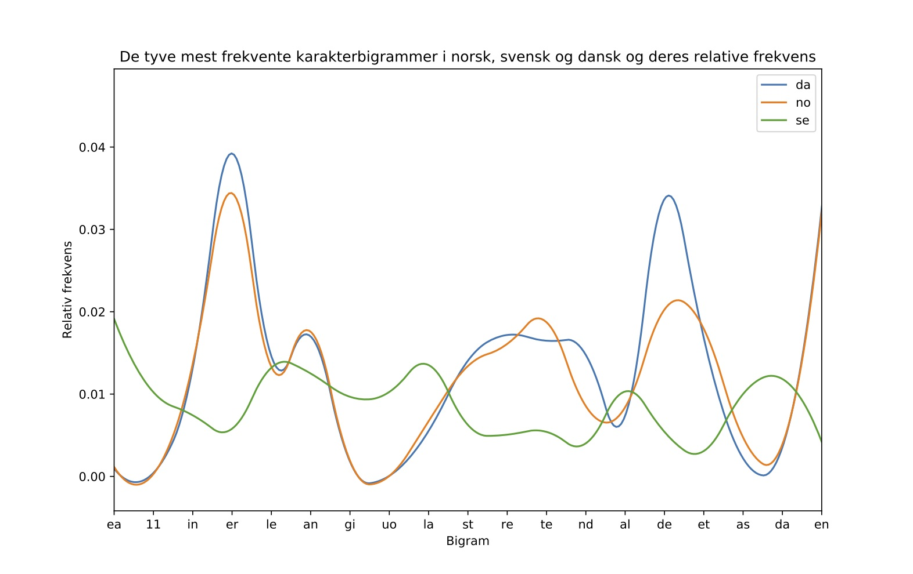

<section data-markdown>
	<textarea data-template>
		Program for i dag
		- Vi skal lave øvelser med
			- Lidt af hvert
		- N-grammer
		- Opgave 1: Caesar-cipher
	</textarea>
</section>

<section data-markdown>
	<textarea data-template>
		N-grammer

		- Bogstaver eller ord
		- Simpel model for hvordan et sprog/en tekst ser ud

		
	</textarea>
</section>

<section data-markdown>
	<textarea data-template>
		N-grammer

		- Anvendelse
			- Tekst- og sprogklassifikation (hvilken genre tekst, på hvilket sprog)
			- Kryptologi
	</textarea>
</section>


<section data-markdown>
	<textarea data-template>
		#### Opgave 1: Caesar-cipher

		I denne skal vi lave kode og dekode hemmelige beskeder skrevet i "Caesar-cipher"

		
	</textarea>
</section>

<section data-markdown>
	<textarea data-template>
		#### Caesar-cipher
		
		- Blev angiveligt brugt af Cæsar til at kode hemmelige beskeder
		- Simpel bogstav-for-bogstav udskiftning
		- "HELLO WORLD!" → "EBIIL TLOIA!"
		- Metode
			- Vælg en 'nøgle', som fortæller hvor meget i alfabetet, du vil rykke frem eller tilbage
			- Gå igennem ordet bogstav-for-bogstav og udskift
		

	</textarea>
</section>

<section data-markdown>
	<textarea data-template>
		#### Caesar-cipher

		Kode beskeder ("HELLO WORLD!" → "EBIIL TLOIA!"):

		- Vælg en 'nøgle', som indikerer hvor langt frem eller tilbage der rykkes
		- Find placeringen i alfabetet på bogstavet du vil kode
		- Læg denne placering sammen med den 'nøgle' du har valgt
		- = placeringen på bogstavet i 'cifferet'
	</textarea>
</section>

<section data-markdown>
	<textarea data-template>
		#### Caesar-cipher

		Kode beskeder ("HELLO WORLD!" → "EBIIL TLOIA!"):

		- Nøgle: -3
		- Alfabet
			
		- Kode "H": `7` + (`nøgle`) = `7` + (`-3`) = `4` = "E"
		- Kode "A": `0` + (`-3`) = `-3` = ???
		- Hvis den nye placering er under 0, skal længden af alfabetet _lægges til_
	</textarea>
</section>

<section data-markdown>
	<textarea data-template>
		#### Caesar-cipher

		Dekode beskeder ("EBIIL TLOIA!" → "HELLO WORLD!"):

		- Vælg en 'nøgle', som indikerer hvor langt frem eller tilbage der rykkes
		- Find placeringen i alfabetet på bogstavet du vil kode
		- Træk 'nøglen' du har valgt fra bogstavets placering
		- = placeringen på bogstavet i alfabetet	
	</textarea>
</section>

<section data-markdown>
	<textarea data-template>
		#### Caesar-cipher

		Dekode beskeder ("EBIIL TLOIA!" → "HELLO WORLD!"):

		- Nøgle: -3
		- Alfabet
			
		- Dekode "E": `4` - (`nøgle`) = `4` - (`-3`) = `7` = "H"
		- Dekode "Å": `28` - (`-3`) = `31` = ???
		- Hvis den nye placering er over alfabetets længde, skal længden af alfabetet _trækkes fra_
	</textarea>
</section>

<section data-markdown>
	<textarea data-template>
		### Opgave 1: Caesar-cipher
		Implementér Caesar-cipheret i python. I skal ikke skelne mellem store og små bogstaver.
		1. Lav en funktion som kan kode beskeder i Caesar-cipher
			- Funktionen kan fx tage 2 input: et `ord` og en `nøgle`
			- Returnerer ordet kodet i Caesar-cipher
		2. Lav en funktion som kan dekode beskeder i Caesar-cipher
			- Samme som ved kodning, men hvor ordet er kodet i cipher
			- Returnere det oprindelige ord
		3. Se om I kan dekode hvilken julesang der gemmer sig i "hemmelig.txt" på Absalon
			- Nøglen er et tal mellem 1 og 20
	</textarea>
</section>

<section data-markdown>
		<textarea data-template>
Eksempel
```python

In [1]: alfabet = "abcdefghijklmnopqrstuvwxyzæøå".upper()

In [2]: code = Caesar_encode("HELLO WORLD", -3)

In [3]: print(code)
Out[3]: 'EBIIL TLOIA'

In [4]: code = Caesar_encode("HELLO WORLD", 5)

In [5]: print(code)
Out[5]: 'MJQQT ØTWQI'

In [6]: decoded = Caesar_decode(code, 5)

In [7]: print(coddecodede)
Out[7]: 'HELLO WORLD'		
```
	</textarea>
</section>